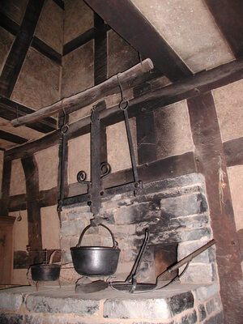

(noun female)
threshing-floor [αλων]
corn threshed or season of threshing Crum:782a Dawoud:744a 2444-1-1threshing-floor 2444-2-1a round of threshing / corn threshed
or season of threshing 2444-3-1oven floor or hearth?

2444-3-2oven floor or hearth? (S,F)ϫⲏⲣⲉ (S)ϫⲉⲉⲣⲉ (B)ϫⲏⲣⲓ (F)ϫⲉⲣⲉCrum:782782 Dawoud:744a744